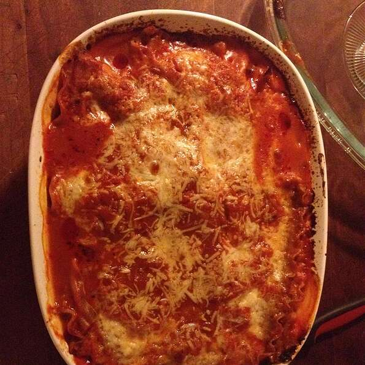

Odin Recipes
Lasagna

Description:
Traditional lasagna like gradnma used to make. Even kids will come
running when they smell this cooking.
Prep time is 5 minutes with a 70 minute cooking time. Serves 6.
Ingredients:
- 1 (26 ounce) jar Prego Traditional Italian Pasta Sauce
- 6 each uncooked lasagna noodles
- 1 (15 ounce) container ricotta cheese
- 2 cups shredded mozzarella cheese
- 1/4 cup grated Pramesan cheese
Steps:
- Spread about 1 cup pasta sauce in 2-quart shallow baking dish (11x7-inch). Top with 3 uncooked noodles, ricotta cheese, 1 cup mozzarella cheese, Parmesan cheese and 1 cup pasta sauce. Top with remaining 3 uncooked noodles and remaining pasta sauce. Cover.
- Bake at 375 degrees F for 1 hour Uncover and top with remaining mozzarella cheese. Let stand 5 minutes.